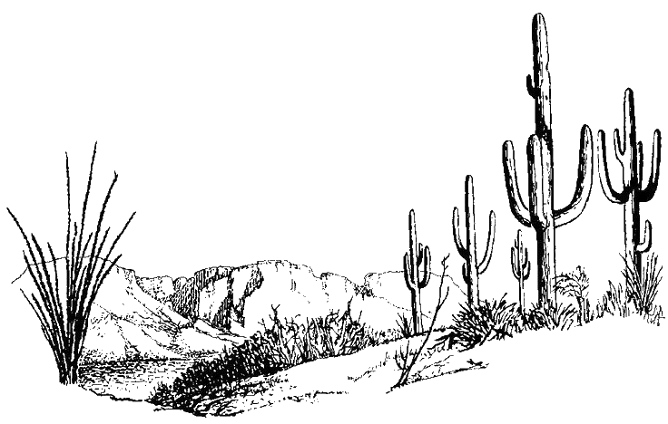

Who are we....?

We are Asteroid County!
A cozy county that is passionate about asteroids and science.
Disclaimer: even though we do our best to provide accurate information, we aren't perfect!
So we encourage you to explore outside resources and discover more for yourself!
To get you started, here is what we used to educate ourselves: